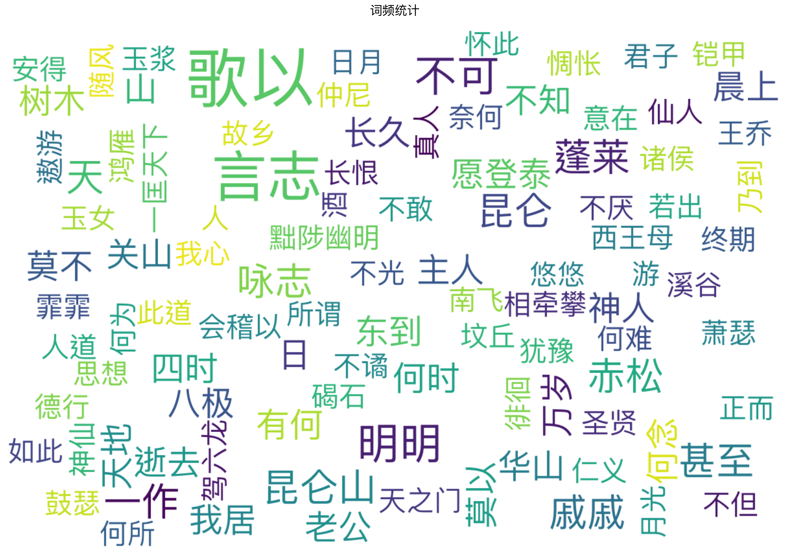
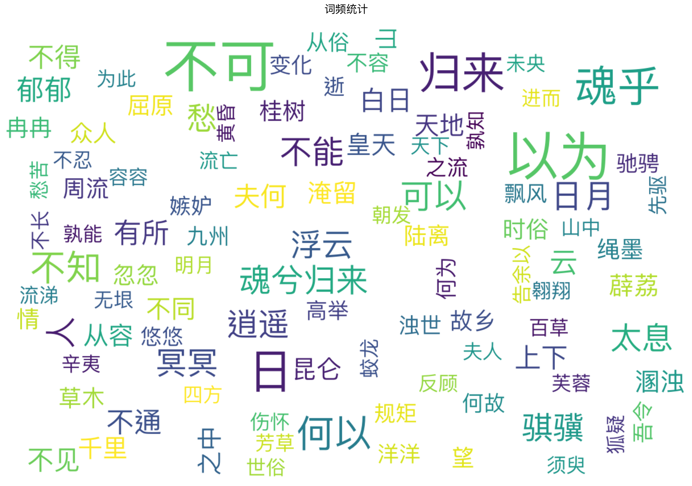
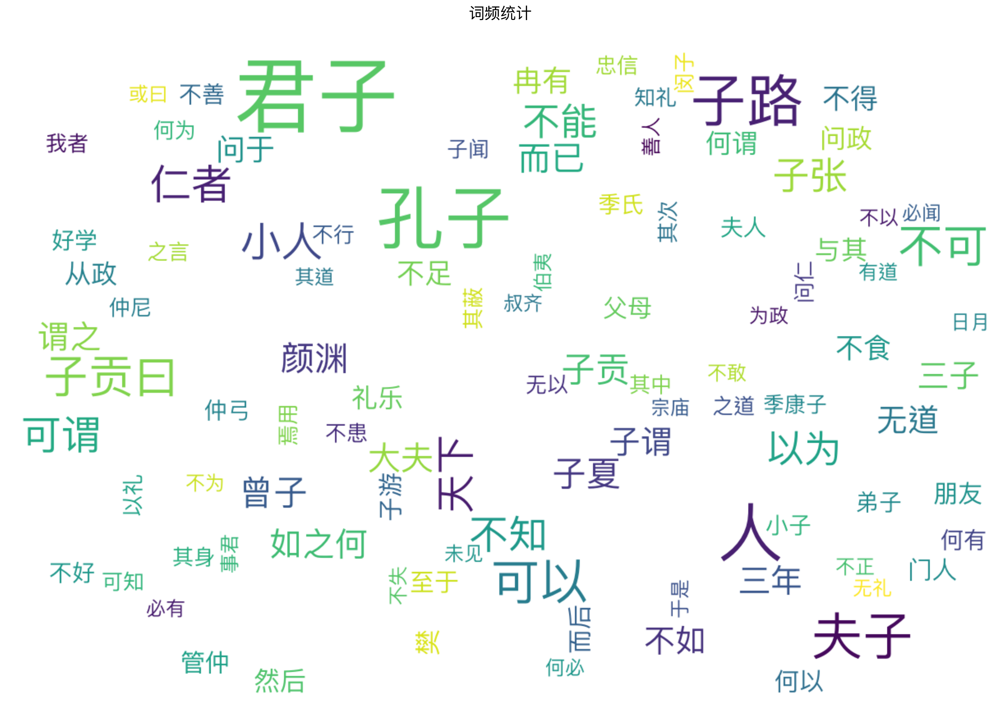
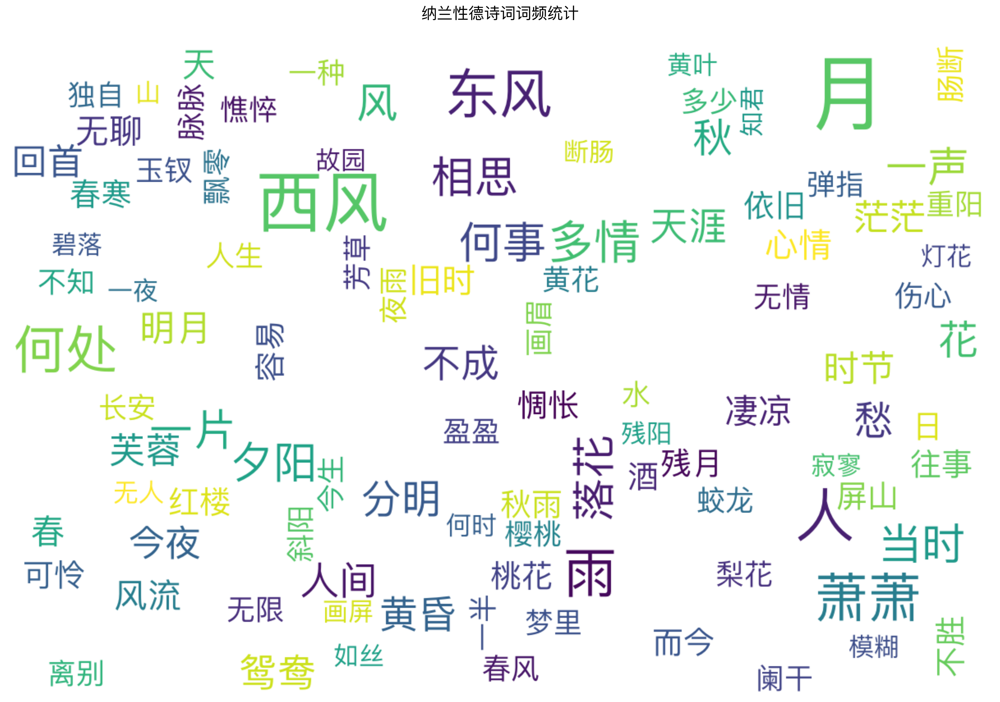
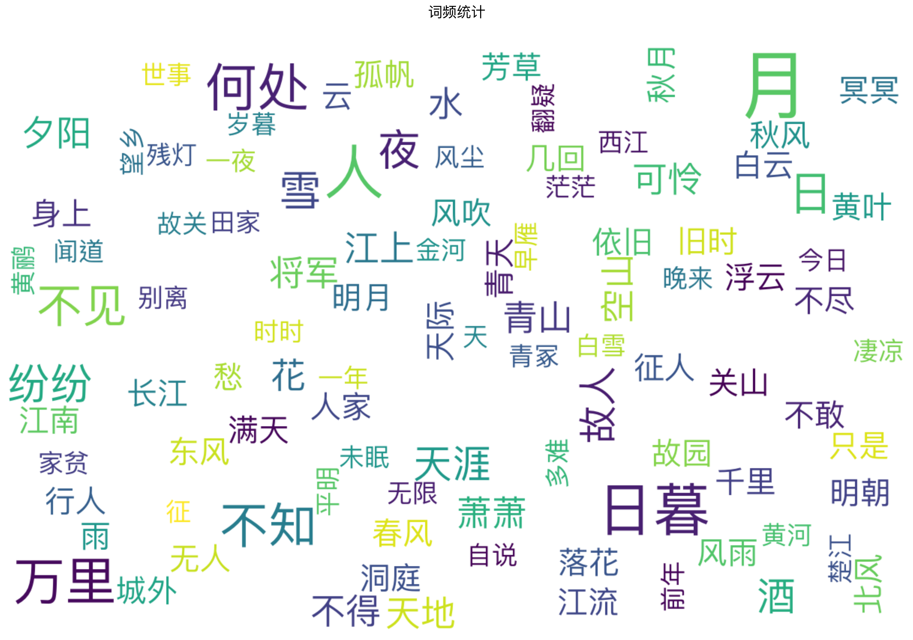
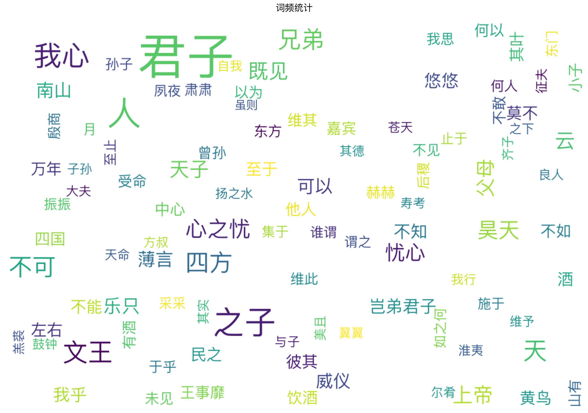
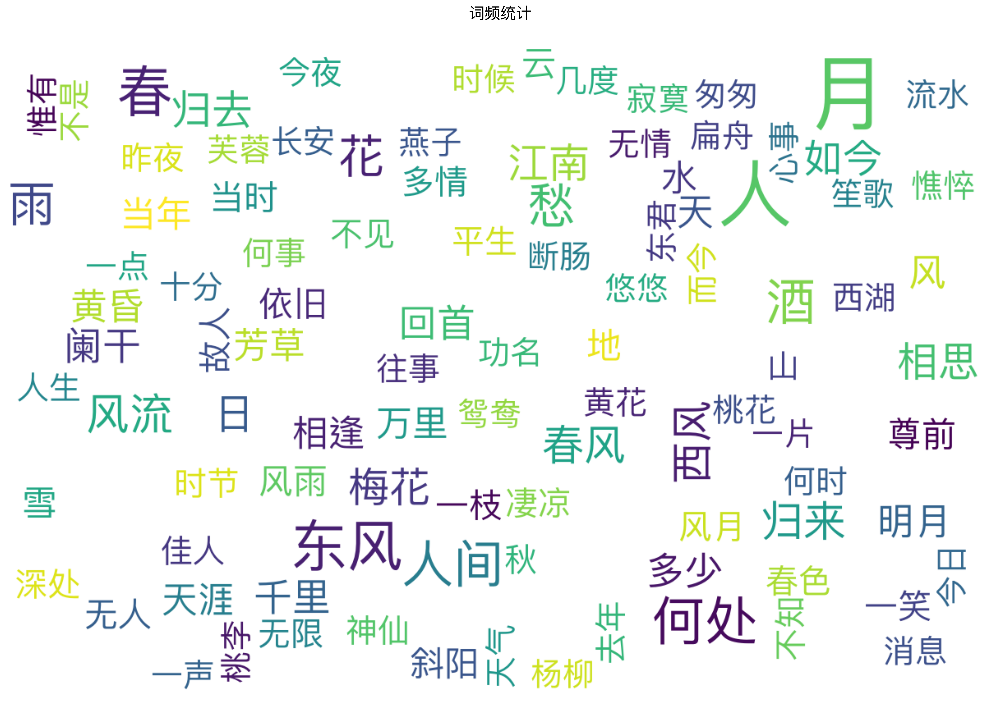
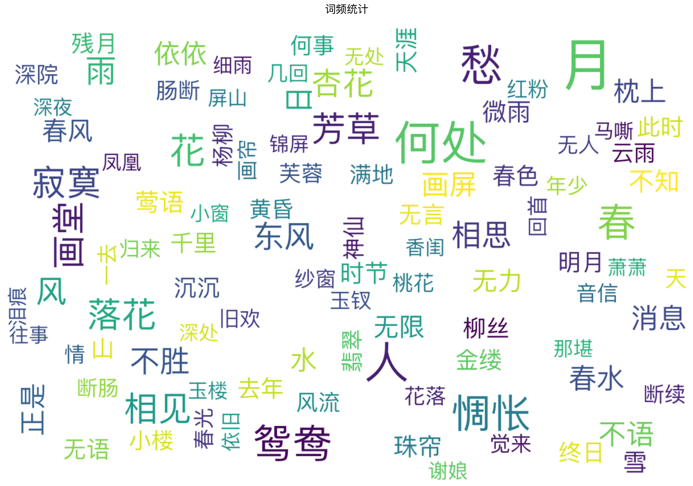
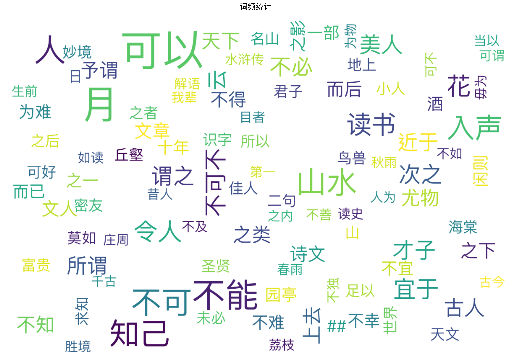
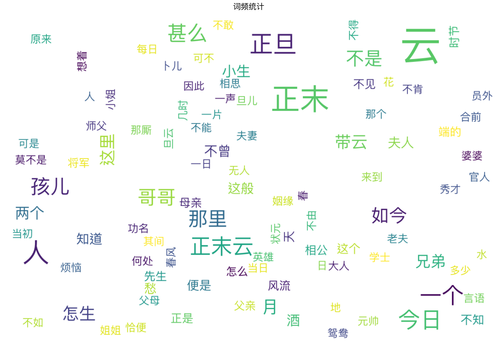

古詩詞常用字
以上展示了中國古詩不同時期最常用的字，常用字往往作為一種意象或者重要的承接方法，助力於古詩文的創作。你可以借鑒這些常用字，輸入到AI大模型當中，幫助你寫出更好的作品。

曹操诗作词频显示出鲜明的政治军事色彩和儒道思想融合特征，"天下"、"德行"等表现政治抱负，"仙人"、"神人"体现玄学追求，整体风格慷慨悲歌，既重实践，又见深邃思考。

楚辞词频体现出强烈的神话色彩和浪漫主义特征，"不得"、"周流"等表现漂泊意识，"天地"、"日月"等宇宙意象频现，风格奔放悲壮。

论语词频突出"君子"、"孔子"等核心概念，"不知"、"可以"等词反映其辩证思维方式，体现儒家思想的教化特征和人文关怀。

纳兰性德词频显示"多情"、"无情"等情感词汇丰富，"东风"、"西风"意象突出，展现其婉约凄美、至情至性的创作特色。

全唐诗词频呈现"明月"、"天地"等自然意象丰富，"不知"、"何处"等抒情词频繁，体现了唐诗兼具壮阔气象与细腻情感的艺术特色。

/*诗经词频显示"君子"、"之子"等人物称谓占比高，多用赋比兴手法，语言朴素自然，展现先秦时期的社会风貌与民间文化。

图不对，我先给删了哈哈*/
水墨唐诗词频体现"江南"、"水墨"等山水意象为主，"纷纷"、"悠悠"等状物词丰富，突出了诗歌与绘画艺术的融合特色。
宋词词频显示"今夜"、"昨夜"等时空词和"相思"、"断肠"等情感词占比高，体现婉约抒情特色，意象丰富，情感真挚细腻。

五代诗词词频展现"相思"、"断肠"等愁绪词频率高，意象精致典雅，抒情特质明显，为宋词婉约风格奠定基础。

《幽梦影》词频反映其说理性强、文人气息浓厚，"知己"、"不能"等思辨词多见，既重视文化修养，又注重人生感悟。

元曲词频统计展现了市井生活气息和人情世态，用语通俗活泼，"泪"、"恨"等情感词丰富，突出了元曲重视抒情、贴近生活的艺术特色。